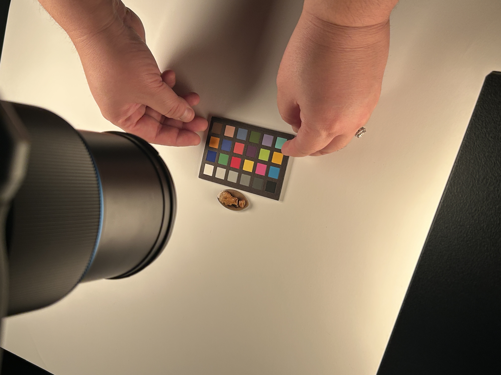
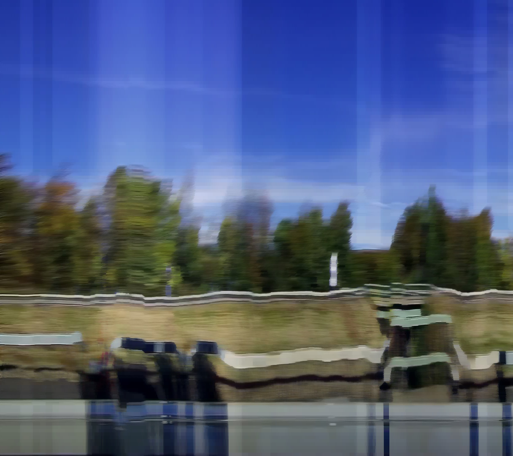

01 — Creative systems
synth splat
Question: Can a captured 3D world behave like a live instrument? In 48 hours I mapped audio features onto Gaussian splats, so that sound reshapes the space as it plays.

A Gaussian splat builds a scene out of many partial views, and no single viewpoint holds the truth. Every project here asks a version of that question: what does a capture show, and what does it bend?
A splat of a bedroom, a slit scan of a highway and a depth map of a gem each get something right and something wrong. I'm interested in both.
01 — Creative systems
Question: Can a captured 3D world behave like a live instrument? In 48 hours I mapped audio features onto Gaussian splats, so that sound reshapes the space as it plays.
02 — Spatial interfaces
Question: How should people navigate physical spaces as creative archives? A queryable Gaussian-splat room combines segmentation, semantic search, and a command-line interface as an alternative to the virtual gallery.

03 — Computational imaging
Question: Can museums recover 3D geometry with the cameras they already own? At the Getty Villa, confocal stereo failed on translucent gems. It worked on diffuse relief objects, which is where the method belongs.
Tested at the Getty Villa Imaging Studios on 10+ real artifacts.

04 — Machine vision
Question: Can computer vision invent forms of image-making, rather than only interpret images? Slit scans, semantic segmentation, 3D reconstruction, and pen plotting turn ten-hour drives into unfamiliar visual records.

05 — 3D capture research
Question: How can institutions digitize objects that break conventional photogrammetry? Wet specimens become a test case for an accessible Gaussian-splat capture workflow for reflective, transparent collections.
With the Center for PostNatural History and the Carnegie Museum of Natural History. Funded by an FRFF Microgrant and a BXA Small Grant.

06 — Creative tools
Question: What does a creative tool need so that artists can change what the model does? Custom ComfyUI nodes connect 5+ models, and real-time Gemini and ComfyUI interfaces ran in workshops at CMU and RISD. I also taught 3D Gaussian splatting to 20+ students.
Nodes: VOSR2, LocateAnything, YOLO, ComfyCV. Sketches: one, two, three.